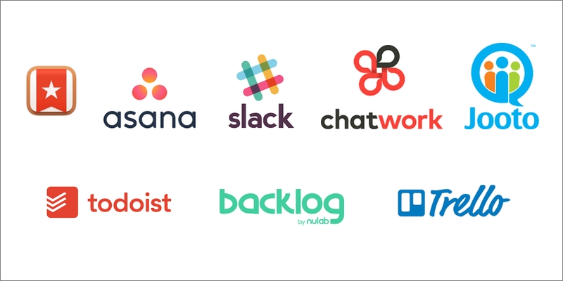

スタッフブログ Vol.1 | 情報共有
社内の情報共有とコミュニケーションを考える

第１回スタッフブログのテーマ「情報共有」
第1回のテーマは「情報共有」です。
先日サイボウズLiveが2019年4月15日でサービスを終了すると発表しました。
アイデアプラスでは数年前からサイボウズLiveを使っていまいたが、この発表を受け現在、代替サービスを探しているところです。
私も前の職場で理想のスケジュール管理ツール、タスク管理ツールを求め、その類のものを片っ端から試してみました。（以下、実際に試したツール）
などなど。
(Googleカレンダーやエクセルは含めていません。)
私の考える代替候補
どれも魅力的なツールですが特徴も料金体系も違うので正直どれを選べばよいのか迷ってしまいます。「これ１つですべてが満たされる」というものはないので、目的や予算、プロジェクトなどに合わせて組み合わせるのが良いかと思います。
Slack + Backlog + Asanaがベスト!?
私の中ではSlack, Backlog、Asanaの組み合わせでほぼカバーできるのではないかと思っていますが、 いずれのツールも不慣れな方にはハードルが高いのかもしれません。 （そんな場合はSlackをChatworkに、AsanaをTrelloに変えてもいいかと思います。）
結局のところ・・・
どれを使っても良いです。すぐに慣れます。 要はどこにポイントを置くかです。社内のコミュニケーションを重視するなら、チャット系のものを。スケジュールやタスクの共有を重視するならプロジェクト管理ツール系のもの。データ共有であればDropboxでも良いかと思います。
１つのサービスですべてを満たそうとすると、どうしても不便なところがでてきますので、2〜3つのサービスを組み合わせるのが良いかと思います。
TrelloやSlackといった他のツールと連動できるものをベースに考えるのもありですね。